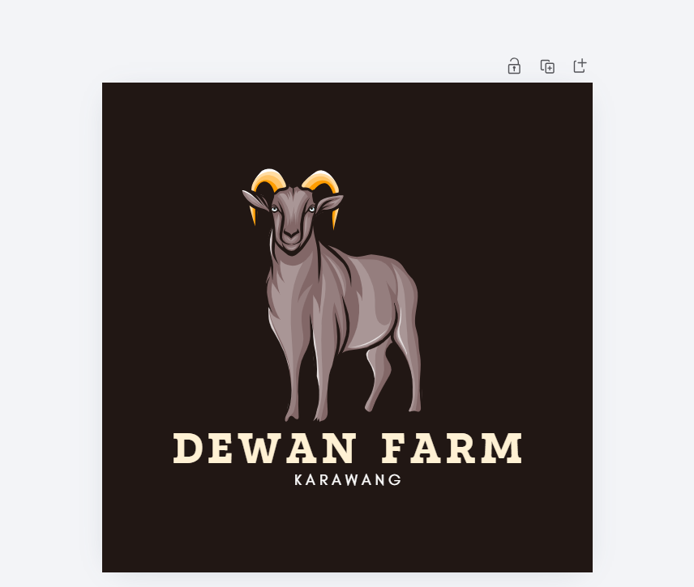
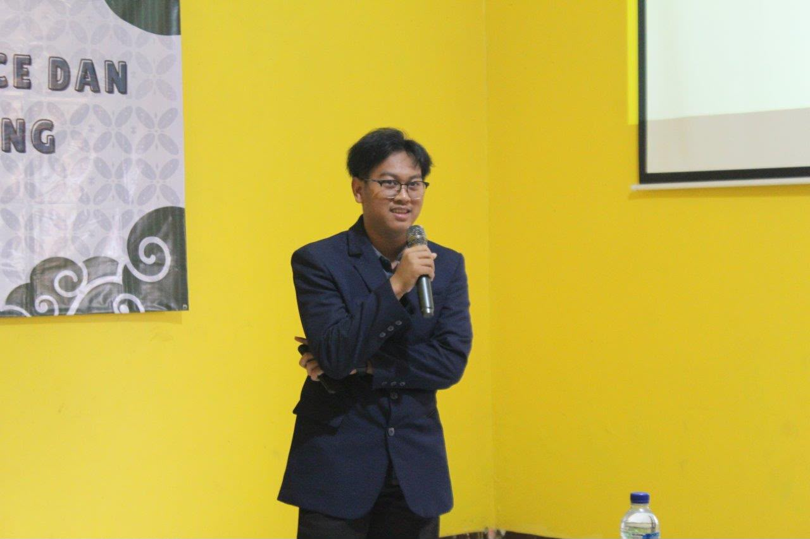
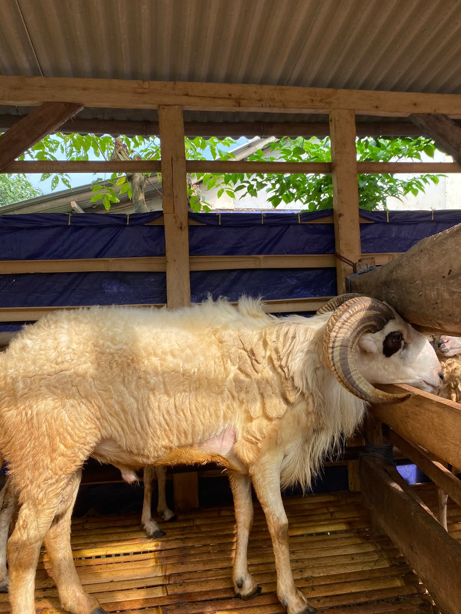
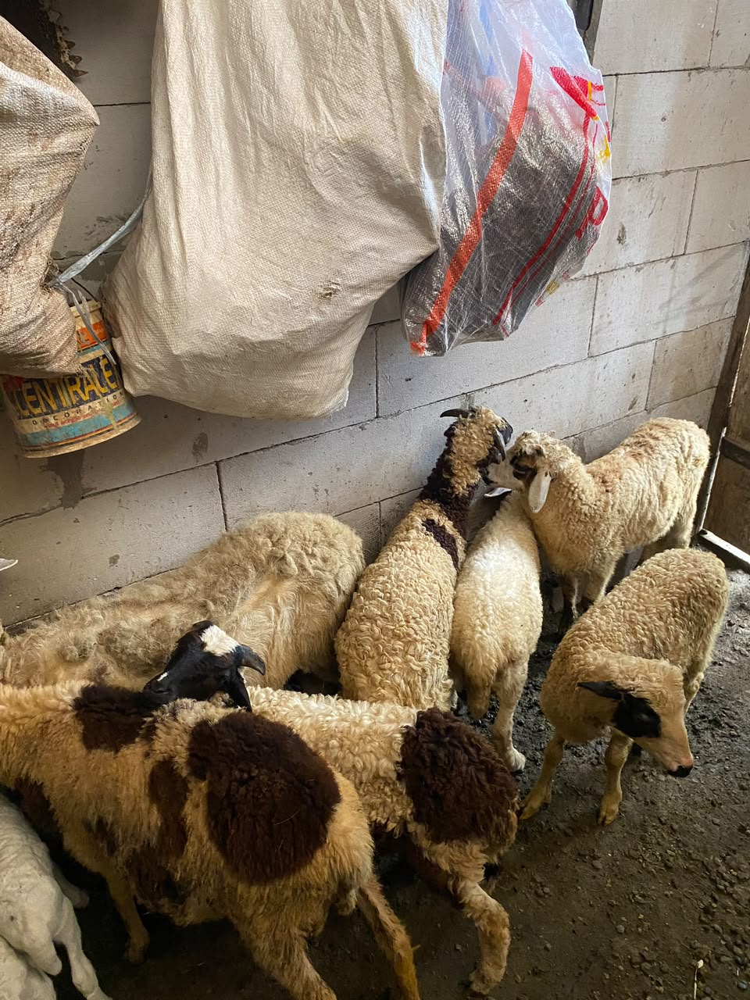
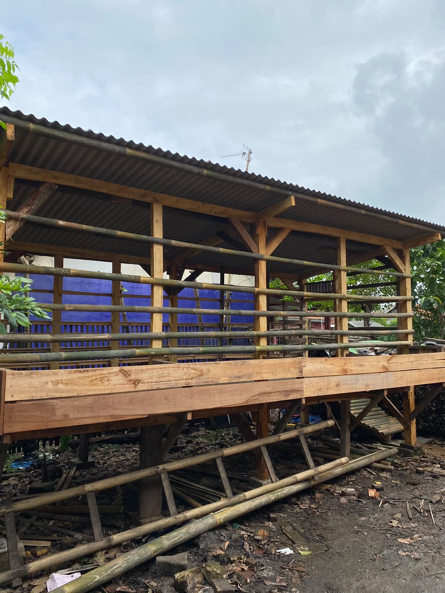
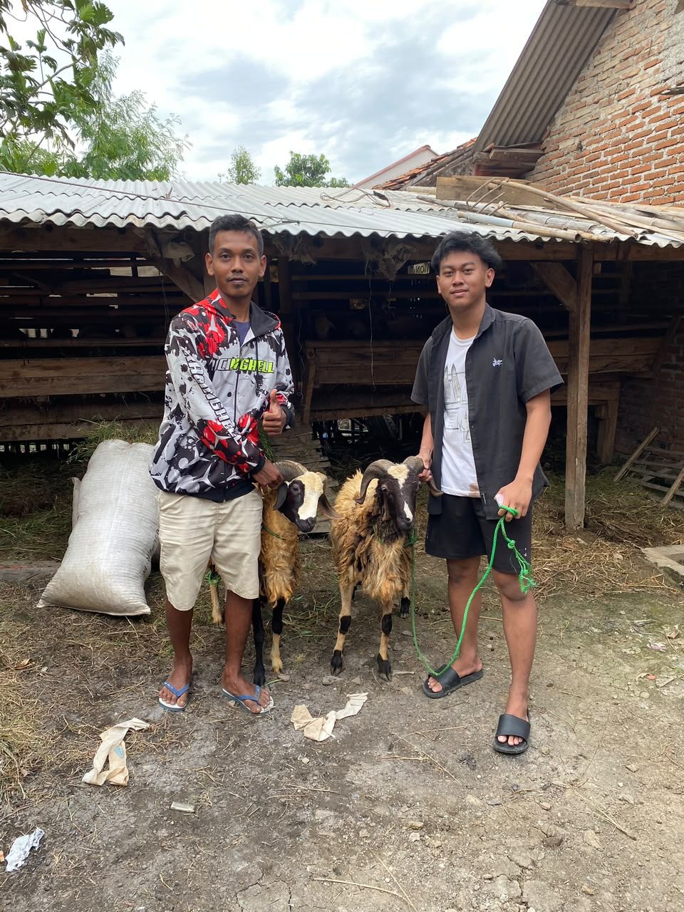

Manajemen Pakan
Panduan Membuat Pakan Fermentasi Berkalori Tinggi
Teknik pengolahan silase pakan untuk menaikkan bobot harian ternak secara konsisten.
Baca SelengkapnyaKarawang


Dewan Farm Karawang adalah Bisnis peternakan domba modern terintegrasi yang didirikan oleh Dhany Dewanto Putra. Berlokasi di Karawang, Dewan Farm menerapkan sistem peternakan berbasis ilmu pengetahuan melalui seleksi genetik unggul, formulasi pakan berkualitas, biosekuriti yang ketat, serta pemantauan kesehatan secara berkala untuk menghasilkan ternak yang sehat, produktif, dan berkualitas tinggi. Dengan mengedepankan kualitas, transparansi, dan pelayanan terbaik, kami berkomitmen menjadi mitra terpercaya untuk kebutuhan qurban, aqiqah, bibit unggul, dan bakalan penggemukan.
Menjadi perusahaan peternakan domba terpercaya di Indonesia yang mengutamakan kualitas, transparansi, dan pelayanan terbaik.
Seluruh ternak telah melewati uji kesehatan berkala, perawatan terukur, dan tersertifikasi.

Qurban Premium Khusus Aqiqah
Khusus Aqiqah

Khusus PembibitanPenyediaan hewan Qurban sesuai syariat, penitipan gratis hingga H-1 Hari H, sertifikat kesehatan, dan fasilitas pemotongan/pengiriman higienis.
Paket pemotongan aqiqah yang sah, higienis, dengan pilihan olahan masakan lezat (Sate, Gulai, Tongseng) yang dikemas higienis & diantar tepat waktu.
Penyediaan pejantan dan indukan unggul ras Dorper, Garut, dan Crossbreed untuk meningkatkan mutu genetik populasi ternak Anda.
Armada khusus yang mengutamakan keselamatan dan kenyamanan ternak (*Animal Welfare*) dengan jangkauan area Karawang, Jabodetabek & Seluruh Indonesia.
Edukasi pembuatan pakan fermentasi/konsentrat, desain konstruksi kandang modern, serta konsultasi manajemen kesehatan ternak.
Garansi penggantian ternak 100% jika ternak mati, sakit, atau cacat sebelum tiba di tangan pembeli atau lokasi tujuan.
Kami menerapkan protokol perawatan teruji yang siap ditinjau secara langsung maupun digital.
Memiliki kelengkapan berkas izin usaha peternakan resmi, rekomendasi Dinas Peternakan, serta Surat Keterangan Kesehatan Hewan (SKKH) lengkap.
Kunjungan dan monitoring rutin dari tim medis veteriner untuk penimbangan, vaksinasi berkala, dan penanganan kesehatan holistik.
Pelanggan dan calon pembeli dapat melakukan kunjungan *Survey Kandang* kapan saja atau meminta video kondisi fisik real-time ternak yang dipilih.
Bekerja sama dengan berbagai lembaga peternakan, asosiasi, dan penyedia layanan aqiqah nasional.






Teknik pengolahan silase pakan untuk menaikkan bobot harian ternak secara konsisten.
Baca Selengkapnya
Pahami kriteria umur, kondisi fisik, dan keabsahan cacat pada domba qurban.
Baca Selengkapnya
Mengurangi tingkat stres domba dan menekan amonia dengan konsep kandang panggung.
Baca Selengkapnya"Pesan domba qurban di Dewan Farm Karawang sangat puas! Hewan sehat, gemuk, bobot sesuai timbangan, dan diantar tepat waktu."
"Proses pembelian domba Garut berjalan lancar. Admin memberikan informasi yang jelas dan pengiriman sesuai jadwal."
"Saya memilih paket aqiqah di Dewan Farm. Makanannya enak dan pengemasannya cukup rapi."
Tim kami siap melayani pertanyaan seputar ketersediaan stok, pendaftaran kunjungan survey kandang, maupun pemesanan qurban dan aqiqah.
Karawang, Jawa Barat, Indonesia (Lokasi Presisi via Google Maps)
085219602595 (Admin Official)
putradhanydewanto@gmail.com